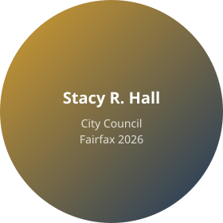

Re-elect Stacy R. Hall for City Council
Focused on safe neighborhoods, reliable infrastructure, and thriving schools—keeping Fairfax a place where families and businesses succeed.

Key Priorities
🛣️ Infrastructure
Fix streets, improve traffic flow, invest in long-term maintenance.
🛡️ Public Safety
Support first responders and modernize neighborhood safety programs.
🎓 Education
Partner with schools to strengthen resources and student outcomes.
Trusted by Community Leaders
"Stacy is a calm, steady voice who focuses on outcomes—not headlines."
"She listens, follows through, and keeps residents informed."